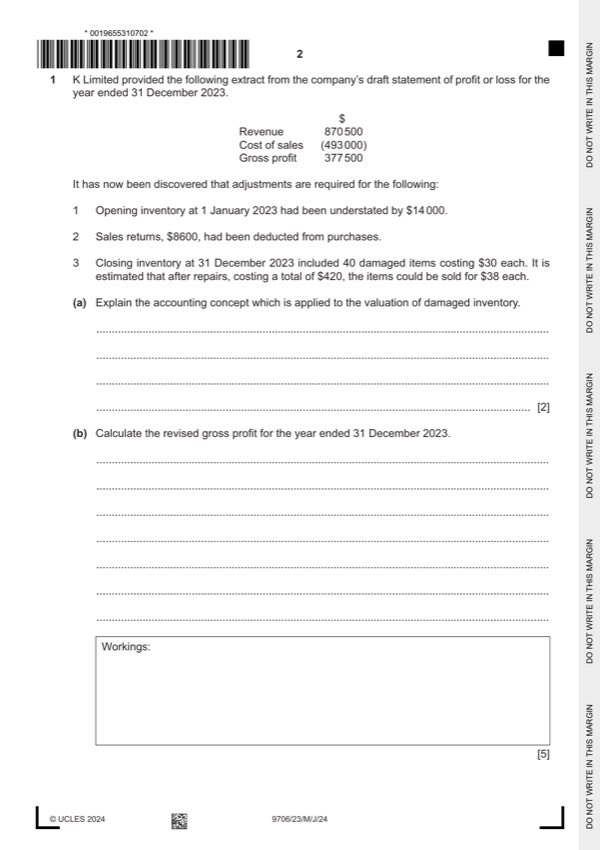

Question 1

Original paper page 2
Part 1(a) — solution
Explain the accounting concept which is applied to the valuation of damaged inventory. 2
Prudence concept (1):
Inventory should be valued at the lower of cost and net realisable value (1)
Avoid overstating profit / assets (1).
Max 2 marks
University Press & Assessment 2024 Page 8 of 21
9706/23 Cambridge International AS & A Level – Mark Scheme May/June 2024
Mark points
- Include the ideas shown in the solution above.
Part 1(b) — solution
- $493 000 + $8 600 (1) + $14 000 (1) + $100 (1) = $515 700
Mark points
- $493 000 + $8 600 (1) + $14 000 (1) + $100 (1) = $515 700
Part 1(c) — solution
Prepare the statement of profit or loss for the year ended 31 December 2023. Start the statement with the revised 8
figure for gross profit from (b).
K Limited
Statement of profit or loss for the year ended 31 December 2023
$
Gross profit 346 200 (1) OF
Distribution costs (97 900) (1)
Administrative expenses (132 400) (1)
Profit from operations 115 900 (1) OF
Finance costs (18 000) (1)
Profit before tax 97 900 (1) OF
Tax (11 300) (1)
Profit for the year 86 600 (1) OF
Accept alternative treatment of revaluation reserve
University Press & Assessment 2024 Page 10 of 21
9706/23 Cambridge International AS & A Level – Mark Scheme May/June 2024
Mark points
- Include the ideas shown in the solution above.
Part 1(d) — solution
- less dividends paid $45 000 = $143 600 (1)
Mark points
- less dividends paid $45 000 = $143 600 (1)
Part 1(e) — solution
Advise the directors which option they should choose. Justify your choice by discussing both options. 7
Option A (debenture issue) Max 3) Option B (share issue) Max 3)
Allow once only for one mark (Max 1 for each row)
Liability requiring repayment Permanent capital (1) row
May require security No security required (1) row
Allow individual comments for one mark each
May have difficulty raising the finance (1) May not be fully subscribed (1)
No voting rights (1) May lead to dilution of ownership (1)
Fixed interest payable each year (1) Dividend payments are discretionary (1)
Interest payments will reduce profit (1) Dividend payments have no effect on profits
(1)
Advice supported with a comment (1)
Accept other valid responses
University Press & Assessment 2024 Page 12 of 21
9706/23 Cambridge International AS & A Level – Mark Scheme May/June 2024
Mark points
- Include the ideas shown in the solution above.